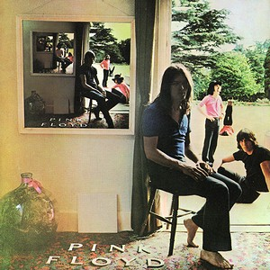
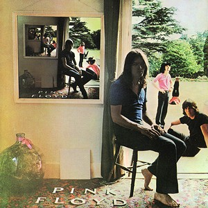

Архітектори звуку. Pink Floyd
Pink Floyd (укр. Пінк Флойд) — британський рок-гурт, провідний представник жанрів психоделічного та прогресивного року. Один з найуспішніших гуртів Великобританії, відомий своєю психоделічно-космічною музикою, філософськими текстами, експериментами зі
звуком, цікавими обкладинками альбомів й оригінальними концертами. Гурт продав понад 210 мільйонів альбомів по всьому світу, включаючи 74,5 мільйонів альбомів у США.
Гурт «Pink Floyd» сформувався в Лондоні в 1965 році, коли Сід Барретт переїхав туди з Кембриджа і приєднався до гурту «The Tea Set», який склали студенти Regent Street Polytechnic Нік Мейсон, Роджер Вотерс, Річард Райт і Боб Клоуз.
Гурт став одним з найпопулярніших у Лондонському андеґраунді в кінці 1960-х. Але дивна поведінка Барретта скоро призвела до того, що його замінили на гітариста й вокаліста Девіда Гілмора. Тоді вокаліст і басист Роджер Вотерс потроху став
домінувати в гурті з кінця 1970-х до його виходу з гурту в 1985 році. Гурт завжди був популярним в Англії, хоча вони не досягли справжнього світового визнання аж до виходу концептуальних альбомів The Dark Side of the Moon (1973), (1975),
Animals (1977) і рок-опери The Wall (1979).
Альбом 1973 року «The Dark Side of the Moon» (укр.Темний бік Місяця) став зоряним часом для групи. Це був концептуальний запис — не просто зібрання пісень на одному диску, а робота, пройнята єдиною, сполучною ідеєю тиску сучасного
світу на психіку людини. Завдяки використанню нового 16-трекового звукозаписного обладнання на студії «Abbey Road», майже дев'яти місяцям, що пішли на запис, і старанням звукоінженера Алана Парсонса, альбом вийшов безпрецедентним та увійшов
до скарбниці звукозапису усіх часів.
У той час як Pink Floyd працювали над «Wish You Were Here», Барретт зробив імпровізований візит до студії, під час якої Торгерсон згадав, що він «сидів навколо та говорив небагато, але його насправді там небуло. Він значно змінився
в зовнішньому вигляді, і гурт спочатку не впізнав його. Вотерс був глибоко засмучений. Прем'єра на 5 липня 1975, на відкритому музичному фестивалі в Knebworth. Випущений у вересні він досяг номеру один у Великобританії та США.
Виданий 30 листопада 1979 року, «The Wall» залишався в чарті Billboard протягом 15 тижнів, досягнувши 3 позиції у Великобританії. The Wall займає третє місце в списку RIAA найбільш продаваних альбомів, з 23 мільйонами сертифікованих
одиниць, проданих в США. Обкладинка альбому була мінімалістською, з різко білою цегляною стіною без назви альбома або гурту.
2 липня2005 року, на один вечір, відкинувши минулі розбіжності, «Пінк Флойд» в останній раз виступили в своєму класичному складі (Вотерс, Гілмор, Мейсон, Райт) на всесвітньому шоу «Live 8», присвяченому боротьбі з бідністю.
Тепер «PinkFloyd» вже ніколи не виступить колишнім складом — після смерті Сіда Барретта 7 липня 2006 року, 15 вересня 2008 року у віці 65 років пішов з життя і Річард Райт.